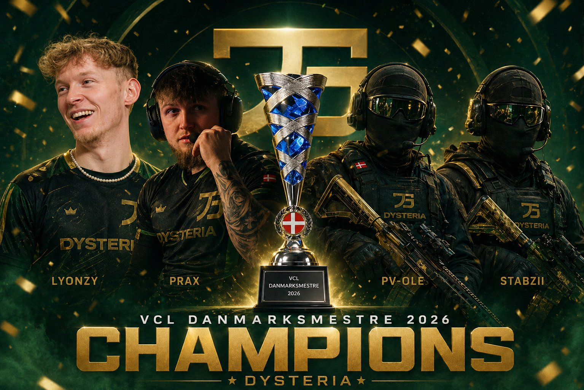

Godkendt VCL-hold
Hold og roster skal være registreret og godkendt i VCL-systemet.
VCL's øverste scene. Her mødes ligaens stærkeste hold om den største titel og retten til at stå øverst i dansk VCL.
De regerende VCL Danmarksmestre står som det nuværende benchmark for Championship.

Championship er ikke bare endnu en turnering i kalenderen. Det er destinationen for hold, der har bevist, at de hører til på VCL's højeste niveau.
Der er ingen permanent åben tilmelding. Adgang sker gennem invitation, kvalifikation eller den vurdering VCL knytter til en konkret Championship-event.
Det er netop eksklusiviteten, der skal give titlen værdi. Når et hold står i Championship, skal både modstand, forventninger og præstationer afspejle ligaens top.
Adgangen fastsættes på den konkrete Championship-turnering. Holdet skal være registreret i VCL og opfylde eventets krav.
Hold og roster skal være registreret og godkendt i VCL-systemet.
Den konkrete Championship-turnering angiver, om adgang sker via invitation, kvalifikation eller en kombination.
Format, rosterkrav og øvrige betingelser fremgår altid af den konkrete turneringsside.
Byg resultater og vis et niveau, der kan bære mod stærkere modstand.
Stabilitet, resultater og rosterstyrke gør holdet relevant til næste Championship.
Opfyld adgangsvejen, der er fastsat på den konkrete Championship-turnering.
Kæmp om VCL's største titel og pladsen som Danmarksmestre.
Når næste Championship er planlagt, finder I format, adgangskrav og tilmelding på den konkrete turneringsside.